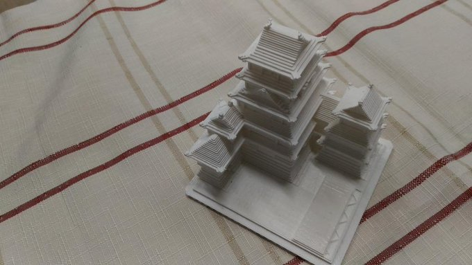

こんにちは、SBです。くび君が絵の記事の予定から急遽お酒の記事を書いたことでマルチ関連の話をする人が僕しかいなくなりました。
低解像度のアートについて語りたいと思います。
低解像度ってなんだよなんでドット絵って言わないんだよにわかか？って思う人もいると思うんですがまあ低解像度って言っても色々あるんだよってことを書きたい記事なので大目にみてください。
この記事の中で低解像度とは画素数が少ないもののほかにも限られた表現の中で作られるアートみたいなものを総称しています。自分はこの画材がかなり好きです。
少ない画素数でのイラストというものは少し前までゲームのシンボルとしての扱いが多かった気がするのですが、最近だと数ある画風の中の一つといった立ち位置が正しいのかなぁと感じています。水彩画やアニメ塗りや厚塗りといったジャンルの中に低解像度っていうのが入ってきたという印象です。
冒頭で低解像度といえばドット絵みたいな話をしたわけですがやはりドット絵に触れないわけにはいかないので触れていきます。
元々ドット絵は限られた容量の中でいかに雰囲気を出すかといったものだったのですが近年だと解像度が上がっていく中であえてドット絵を選ぶ流れができています。最近はイベントやら本やらが結構出ていたりもします。
ドット絵のオンリーイベントPixelArtPark。プチュパポﾋﾟューンのライブをやってたりして楽しい。
去年に出たドッターの本。すごい。
こんな感じで結構盛り上がってるドット絵ですが、ドット絵の特徴として一つ一つのピクセルに対してかなり意味を持たせているという印象があります。MUGENといった格ゲーに見られるような大きいドット絵でも主線を整えるなどの整形を怠らない感じですね。
それからよくドット絵かピクセルアートかみたいな呼称の論争があったりします。「ドット絵」はアートとして確立する前から呼称として使われていたのに対して「ピクセルアート」は”アートとして確立したドット絵が日本より先に流行った海外”から逆輸入されたので、ドット絵は容量が限られていたころのもの、ピクセルアートはアートとしてのものと分けようとしたんだと思います。自分はどちらの呼び方でも良いと思っている派閥です。日本語か英語かの違いなので。
低解像度のジャンルの中で個人的に一押しなのがLowBitです。LowBitというジャンル名が正しいのかはわからない（そもそもジャンル名があるのかすら怪しい）のですが、LowBitとは単に低い解像度で作られたイラストないしはアートのジャンルです。画像を縮小したものや3Dモデルをレンダリングで低解像度に設定しているものなんかもこれに該当すると思います。特に3Dモデルを低解像度にしたものはアニメーションと相性が良いのでかなり今後"来る"分野だと思っています。
イラストの縮小について、これまでに画像を縮小しただけのものをドット絵と呼称すると炎上する流れがあったのですがこれは単純に完成度が低いものが多かったこと、それからドット絵ではないジャンルとごっちゃ混ぜにしたことが原因ですね。
ドット絵とLowBitの大きな違いとして細部に意味を持たせようとしているかどうかの差があります。ドット絵は細かな配置によって見た人に作者のこだわりを伝えるといったことができますがLowBitにそれは出来ません。LowBitはどちらかというとドット絵よりもピクセル単位の羅列という画材の良さを前面に押し出しているものです。これについてどちらが良いといったことはないので酢がそれぞれが別のものであるということが広まれば良いなと感じています。
どんどん解像度が上がってきているこのご時世にあえて制限された表現をするイカしたジャンルです。
ボクセル、かなり熱いですね。ドット絵が正方形の集まりとするならボクセルは立方体の集まりです。自分は今年の文化の祭典にボクセルで作った城を3Dプリンタで出力したものを出しました。
ボクセルの特徴としてドット絵などの2D低解像度アート群に比べ光源なんかを置くことが受け入れられてる印象があります（ドット絵なんかだと最先端のインディーズなんかが光源を取り込んだドット絵を作っている印象はありますが）。
一種の競技化してるところがありますよね、ローポリ。少ないポリゴン数でいかにそれっぽく見せるかは極端に低解像度にする人たちでなくとも3Dモデラーにとっては腕の見せ所だと思います。VRCの流行によりちょっとだけ流行ってきている気がします。
ボクセルにドット絵のテクスチャ張ってるのマジで天才だと思います。低解像度ここに極まれりって感じで。マイクラでドット絵を作ってる人たちはテクスチャの良さを消していることを理解して悔い改めてほしい。
マイクラじゃなくてもローポリ+ドット絵のテクスチャというのがかなり面白いと思っているのですがジャンル名を忘れてしまいました。思い出したら追記したいと思います。
今回色々紹介してきましたが一番伝えたいのは一つのジャンルに縛られないでいろんなものを見て作ってほしいということです。LowBitみたいなこれまであまり探求されてこなかったジャンルも本当に今後流行ると思ってます（実際にツイッターなんかで評価されている人もいる）。人間、完成度が高くてグッとくるものであれば評価されるので作品を作っている任意の人種は完成度を高めるために頑張ってください。
明日はDTM班のsaaaさんの記事です。楽しみ～～～～！